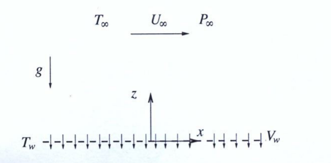

Official Problem Statement
Consider the steady planar motion of a perfect liquid of density $\rho$, viscosity $\mu$, thermal conductivity $k$ and specific heat $c$ in the vicinity of a horizontal porous wall. Far from the wall, the horizontal velocity component is $v_x = U_\infty$, the pressure is given by $p + \rho g z = P_\infty$ and the temperature is $T = T_\infty$, different from the value $T_w$ at the wall. The liquid is sucked through the pores of the wall, resulting in a transverse velocity $v_z = -V_w$ at the wall surface. In the analysis, assume that the velocity and temperature fields are only a function of the distance to the wall $z$.
1. Determine the velocity components $v_x(z)$ and $v_z(z)$ and well as the pressure field $p(x, z)$.
2. Obtain the temperature field $T(z)$.
3. Calculate the streamline that crosses $x = x_o$ and $z = 0$.
4. Compute the viscous stress on the wall.
5. Determine the heat flux from the fluid to the wall.

Source: NS1.pdf (page 1). Notes.pdf, Chapter 4: continuity Eq. 4.7, incompressible momentum Eq. 4.12, perfect-liquid energy Eq. 4.42, no-slip and far-field conditions (Section on initial and boundary conditions).
Worked solution (4-phase method)expand / collapse
Hypotheses, Data and Unknowns
- Steady planar flow of an incompressible liquid with constant $\rho$, $\mu$, $k$, $c$ (perfect liquid, Notes.pdf, Eq. 4.38): the equations to use are (4.40), (4.41) and (4.42).
- Gravity acts along $-\bar{e}_z$ (the far-field pressure is $p + \rho g z = P_\infty$, so $\bar{f}_m = -g\,\bar{e}_z$).
- Given: the fields depend only on the distance to the wall, $\partial/\partial x = \partial/\partial y = \partial/\partial t = 0$ for every variable, except that the pressure is allowed to depend on $x$ (it is determined below).
- No chemical reaction and no radiation: $Q_c = Q_r = 0$.
- The wall is at rest and porous: the tangential velocity is zero (no-slip) and the normal velocity is the suction velocity.
- Data: $[\rho,\ \mu,\ k,\ c,\ U_\infty,\ P_\infty,\ T_\infty,\ T_w,\ V_w,\ g]$ with $V_w > 0$. Unknowns: $v_x(z)$, $v_z(z)$, $p(x,z)$, $T(z)$, the streamline, the wall stress and the wall heat flux.
- Degrees of freedom: two velocity components, the pressure and the temperature, each a function of one coordinate (plus $x$ for the pressure): four unknown fields against continuity, two momentum components and the energy equation.
| Symbol | Meaning | SI unit |
|---|---|---|
| $\rho$, $\mu$, $\nu = \mu/\rho$ | density, dynamic and kinematic viscosity | kg/m$^3$, Pa s, m$^2$/s |
| $k$, $c$, $\alpha = k/(\rho c)$ | thermal conductivity, specific heat, thermal diffusivity | W/(m K), J/(kg K), m$^2$/s |
| $\mathrm{Pr} = \nu/\alpha = \mu c/k$ | Prandtl number | 1 |
| $U_\infty$, $V_w$ | free-stream velocity, suction velocity | m/s |
| $P_\infty$, $T_\infty$, $T_w$ | far-field reduced pressure, far-field and wall temperatures | Pa, K, K |
Frames, Field Form and Boundary Conditions
- Cartesian frame $(x,y,z)$ with $x$ along the wall (in the direction of $U_\infty$), $z$ normal to it and pointing into the liquid, $y$ out of the plane. The basis $\{\bar{e}_x,\bar{e}_y,\bar{e}_z\}$ is orthonormal and right-handed, so no change of basis is needed ($\det R = 1$, $R R^T = I$ with $R = I$).
- Field form: $\bar{v} = v_x(z)\,\bar{e}_x + v_z(z)\,\bar{e}_z$, $T = T(z)$, $p = p(x,z)$.
- The wall is at $z = 0$ and the liquid occupies $z > 0$.
| Location | Condition | Origin |
|---|---|---|
| $z = 0$ | $v_x = 0$ | no-slip on the wall at rest |
| $z = 0$ | $v_z = -V_w$ | suction through the pores (statement) |
| $z = 0$ | $T = T_w$ | thermal equilibrium at the wall |
| $z \to \infty$ | $v_x \to U_\infty$ | free stream (statement) |
| $z \to \infty$ | $p + \rho g z \to P_\infty$ | free stream (statement) |
| $z \to \infty$ | $T \to T_\infty$ | free stream (statement) |
Step-by-Step Derivation
3.1 Continuity and the normal velocity
The constant is fixed at the wall: $v_z(0) = -V_w$, therefore
3.2 Momentum equations
For $\bar{f}_m = -g\,\bar{e}_z$ the Cartesian components of (4.41) with constant $\mu$ are (Notes.pdf, Section on the Navier-Stokes equations in Cartesian coordinates). Every term that contains $\partial/\partial t$, $\partial/\partial x$ or $\partial/\partial y$ of a velocity component is zero.
z-component:
Integrating (3) with respect to $z$ at fixed $x$ (the "constant" may depend on $x$):
The far-field condition $p + \rho g z \to P_\infty$ holds for every $x$, with $P_\infty$ a constant, so $f(x) = P_\infty$:
x-component:
Dividing by $\mu$ and using $\nu = \mu/\rho$:
This is a linear ODE with constant coefficients. Trying $v_x = e^{\lambda z}$ gives $\lambda^2 + (V_w/\nu)\lambda = 0$, so $\lambda = 0$ or $\lambda = -V_w/\nu$:
Boundary conditions: $v_x(\infty) = U_\infty$ gives $C_1 = U_\infty$ (the exponential vanishes because $V_w > 0$); $v_x(0) = 0$ gives $C_1 + C_2 = 0$, so $C_2 = -U_\infty$:
3.3 Energy equation and the temperature field
With $e = e_o + cT$, $\bar{v} = v_x\bar{e}_x + v_z\bar{e}_z$ and $\partial/\partial x = \partial/\partial t = 0$, (4.42) reads
The viscous dissipation of this flow, from the Cartesian expression of $\phi_v$ (Notes.pdf, Section on the Navier-Stokes equations in Cartesian coordinates), has a single non-zero shear rate $\partial v_x/\partial z$:
Substituting $v_z = -V_w$ and (11) in (10) and dividing by $k$, with $\alpha = k/(\rho c)$:
The solution is the sum of the homogeneous solution $B_1 + B_2e^{-V_w z/\alpha}$ and a particular solution $A\,e^{-2V_w z/\nu}$. Substituting the particular form in (12), with $T_p' = -(2V_w/\nu)A\,e^{-2V_wz/\nu}$ and $T_p'' = (4V_w^2/\nu^2)A\,e^{-2V_wz/\nu}$:
where $\mathrm{Pr} = \nu/\alpha = \mu c/k$ was used. Hence (for $\mathrm{Pr} \neq 2$)
so that $T = B_1 + B_2e^{-V_wz/\alpha} + A\,e^{-2V_wz/\nu}$. The condition $T(\infty) = T_\infty$ gives $B_1 = T_\infty$ and $T(0) = T_w$ gives $B_2 = T_w - T_\infty - A$:
Note that $V_wz/\alpha = \mathrm{Pr}\,V_wz/\nu$. For $\mathrm{Pr} = 2$ the two exponents coincide and the particular solution takes the form $A z\,e^{-2V_wz/\nu}$ (a resonant case, not worked out in the sheet).
3.4 Streamline through $(x_o, 0)$
The streamlines are the integral curves of $\bar{v}$: $dx/v_x = dz/v_z$. With (2) and (9):
Integrating from $z' = 0$ (where $x = x_o$) to $z' = z$. The antiderivative of $1 - e^{-az'}$ with $a = V_w/\nu$ is $z' + e^{-az'}/a$, and Barrow's rule gives $[z' + e^{-az'}/a]_0^z = z + (e^{-az} - 1)/a$:
3.5 Viscous stress on the wall
The wall is the surface $z = 0$. Take the unit normal pointing into the liquid, $\bar{n} = \bar{e}_z$: then $\bar{\bar{\tau}}'\cdot\bar{n}$ is the viscous force per unit area that the liquid exerts on the wall. The components of $\bar{\bar{\tau}}'$ with the Navier-Poisson law (Notes.pdf, Section on stress components, Cartesian coordinates) are
At the wall, from (9), $dv_x/dz\big|_{z=0} = U_\infty V_w/\nu$, so
The liquid drags the wall in the direction of the free stream.
3.6 Heat flux from the liquid to the wall
The heat flux from the liquid to the wall is $\bar{q}\cdot\bar{n}$ with $\bar{n} = -\bar{e}_z$ (outward from the liquid, into the wall), and $\bar{q} = -k\nabla T$ (Notes.pdf, Eq. 4.36):
Differentiating (15) and evaluating at $z = 0$:
Using $k/\nu = \rho c/\mathrm{Pr}$ and $B_2 = T_w - T_\infty - A$:
The result does not depend on the Prandtl number.
Interpretation, Limits and Dimensional Check
- Physical meaning. Suction pins the shear layer to the wall: the velocity reaches $99\%$ of $U_\infty$ at $z \approx 4.6\,\nu/V_w$ and the thickness $\nu/V_w$ does not grow with $x$. The liquid is pulled towards the wall by the pores, and the viscous diffusion away from the wall balances this convection (equation (6)).
- Limits. For $V_w \to 0$ the layer thickens without bound, consistent with the absence of a steady unidirectional solution. For $z \to \infty$, $v_x \to U_\infty$ and $T \to T_\infty$. At $z = 0$, $v_x = 0$ and $T = T_w$.
- Dimensional check. $V_wz/\nu$ and $V_wz/\alpha$ are dimensionless. In (23), $\rho cV_w\,\Delta T$ has units $(\mathrm{kg/m^3})(\mathrm{J/(kg\,K)})(\mathrm{m/s})\,\mathrm{K} = \mathrm{W/m^2}$, and $U_\infty^2/(2c)$ has units $(\mathrm{m^2/s^2})/(\mathrm{J/(kg\,K)}) = \mathrm{K}$. In (19), $\rho V_wU_\infty$ has units $\mathrm{kg/(m^2\,s)}\cdot\mathrm{m/s} = \mathrm{N/m^2}$.
- Energy check. Equation (23) is the heat that must flow into the wall in steady state: per unit area the suction brings in from the free stream the energy $\rho V_w(cT_\infty + U_\infty^2/2)$ and the pores take out $\rho V_w\,cT_w$; the pressure work and the work of gravity cancel, and the shear does no work on the wall because it is at rest. The difference is $\rho cV_w[T_\infty - T_w + U_\infty^2/(2c)]$, the result (23).
- Special case. For $U_\infty \to 0$ there is no dissipation and (23) reduces to $\rho cV_w(T_\infty - T_w)$, the advection-conduction balance of pure suction.